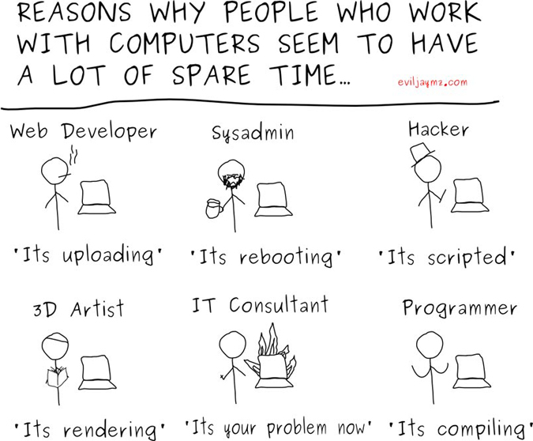

I will write today about some small things that make you are hacker. First of all to understand what hacker means you should read How To Become A Hacker by Eric Steven Raymond.
After you read that we can start with talking here.
To be a hacker for me would mean to be a good at lot of things today, to love trying different things and to have courage to explore something new and all that combined with passion. Hacker should be a good Web Developer so that would mean you should know your way in HTML as a markup language that is presenting content of WWW, also you would probably like to know JavaScript to create all that crazy dynamic stuff on your blog and a choice would also fall on PHP. Here is also fine to notice that PHP is notorious for its security problems but people just seem to enjoy that language, HTML5 is becoming really good for creating dynamic things, videos and even fluid games, and JavaScript is on rise with its popularity because you can create cool stuff in matter of minutes with it (people developed a lot of good pieces of software with it). Also you will probably learn by the way about CSS to improve your website look and feel.
Hacker should also be a great System Administrator meaning that you will be spend a lot of nights (while your girl is asleep  ) doing stuff (mostly called scripting) in Shell ), Perl, one of my favorites called Python and this one you can't avoid for any serious way to be called a hacker and the name of that language is C ). See how simple the name of it is. And the language is actually really simple - for a computer to understand. But computers are sometimes evil and they don't like people. Especially boring ones that just know to complain.
) doing stuff (mostly called scripting) in Shell ), Perl, one of my favorites called Python and this one you can't avoid for any serious way to be called a hacker and the name of that language is C ). See how simple the name of it is. And the language is actually really simple - for a computer to understand. But computers are sometimes evil and they don't like people. Especially boring ones that just know to complain.
Sometimes hacker should really be an artist so he can develop nowdays and GUI (Graphical User Interface) for users that is appealing and doesn't look like zombie version of CLI app. Lately a nice way to make that is using nodejs.

Also there is a difference between a hacker and a programmer. While programmer mostly go to school to learn coding and develop software because they choose that for a leaving, for hacker on other side isn't necessary to go to schools and they do it all for the sake of fun and love towards some specific problem. They code stuff and make it open source because they want people to look at their code, improve it and suggest new features so we all learn from each other ideas and codes.
Also language that I would suggest for learning is the mighty Haskell.
After you will you are good in some of these thing, try making some app or two or go even to Project Euler and try yourself out.
For learning there are plenty resources out there, online courses, Free softwares to look upon its code and contribute back to community.
And if you want my recommendations which Operating System to use - Debian is my choice, choice of many hackers and in general a universal operating system used by Google (its servers), NASA, RapberryPi and many others.
This door is baroquen, please wiggle Handel.
(If I wiggle Handel, will it wiggle Bach?)
-- Found on a door in the MSU music building